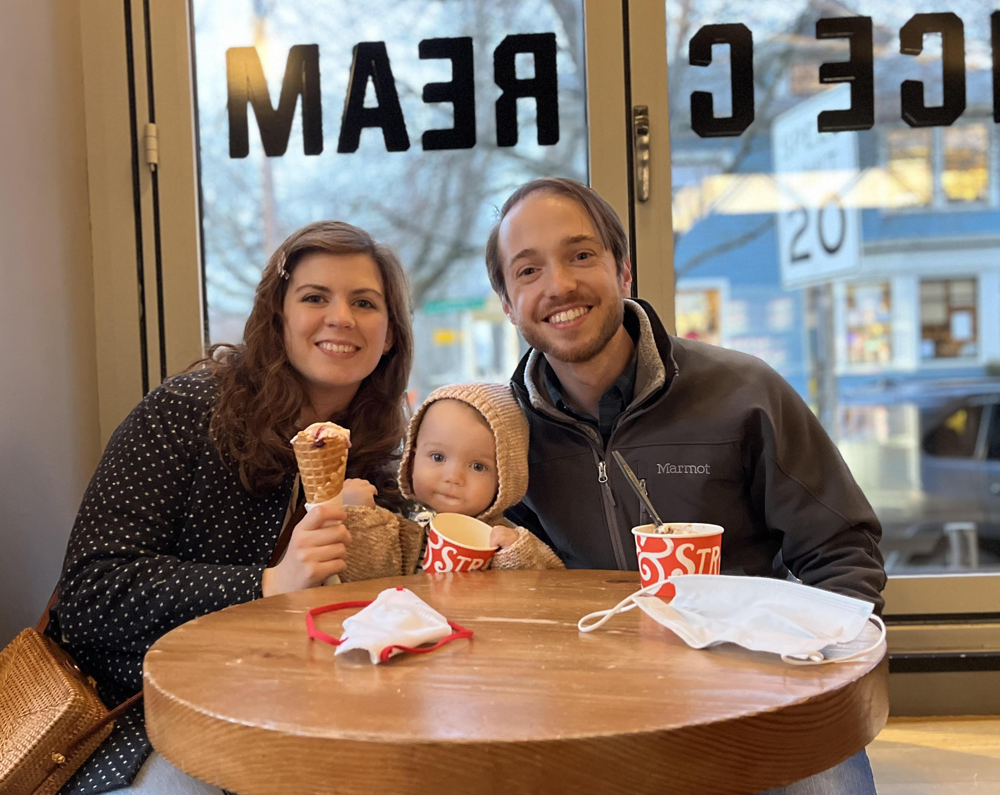

Hello, World!
My name is Alex Reiter.
I'd like to become a computer science teacher!
I think I want to teach middle school...
but I'm open to high school too.
Before this summer, I was a software engineer for about 9 years.
I just moved back to Massachusetts after living in sunny San Diego since 2015.
